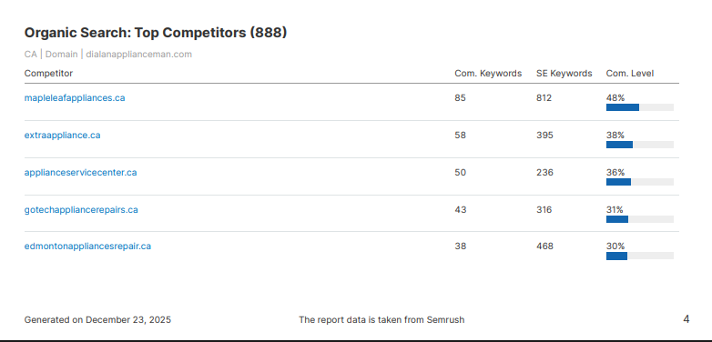
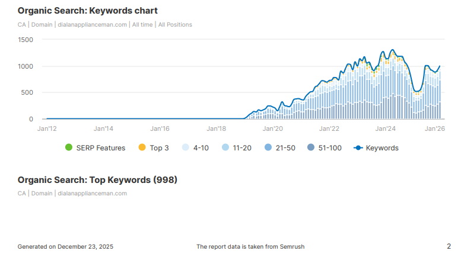
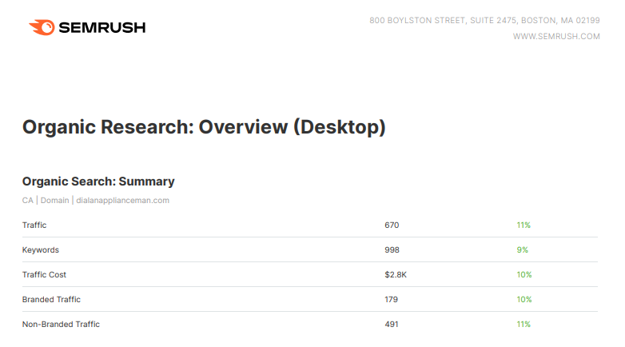

205%
Increase in Organic Traffic

The client is a local appliance repair company serving residential customers. Their technicians were experienced and trusted offline, but online visibility relied almost entirely on paid Google Ads.
They had the service quality, but their digital foundation was weak.


Although the business had strong service quality, their website did not clearly communicate services to search engines.
We identified critical gaps in the website's technical architecture:
Based on the audit findings, we rebuilt the foundation carefully. Changes focused on making the website easy to understand — both for search engines and real people.
Clear service-based page hierarchy established.
Improved internal linking to distribute authority.
Stronger local relevance signals implemented.
Over the following months, organic visibility improved steadily. The business began receiving more calls without increasing ad spend.

The results were not caused by tricks or automation. They came from aligning the website with how search engines and customers actually evaluate trust and clarity.
"Clarity is the ultimate trust signal online."
Every business is different. But clarity always starts with understanding what is really happening.
Request a Free Website & SEO Audit